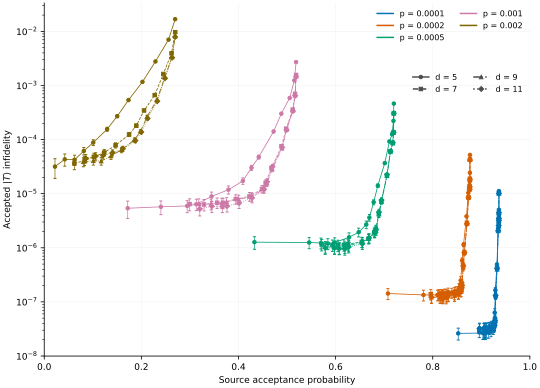

T State Cultivation¶
This tutorial shows how to compile an isolated T block and assess its prepared state. Use the state in a Logical T Gate for gate teleportation.
Build and compile¶
The source needs one T block and one output port. Its pipe carries the prepared patch forward in time:
import bloq
def build_program() -> bloq.Bloq:
"""Build and save the T-to-Port source and its distance-11 compiled IR."""
source = bloq.BlockGraph()
source.add_block(bloq.Block((0, 0, 0), "T"))
source.add_block(bloq.Block((0, 0, 1), "Port"))
source.add_pipe(bloq.Pipe((0, 0, 0), "+Z"))
source.validate()
source.save("t-source.blog")
program = bloq.compile(source, distance=11)
program.save("t-source.bloqir")
return program
The IR retains the output patch and a cultivation retry region. Physical
postselection failures or either logical observable’s decoder Flip trigger a
retry. Whole-program Stim emission cannot represent this non-Clifford protocol.
Cultivated state calibration¶
Add ten memory rounds after escape and growth to represent the decoding latency. Clifft samples the physical T circuit, while its Clifford companion supplies PyMatching’s detector error model. Ideal terminal stabilizer measurements close the decoding problem.
We compute the corrected logical expectations for the accepted-state infidelity:
Use Python 3.12 or newer and install Clifft and the GAP-enabled PyMatching build:
uv add "bloq-py==0.1.1" clifft "pymatching @ git+https://github.com/inmzhang/PyMatching.git@de4bb3e0796c1c9873d3ed5d1704364db10592cb"
The full script samples in batches and reports acceptance and infidelity for each GAP threshold:
"""Calibrate an isolated T state with Clifft and PyMatching complementary gaps."""
from __future__ import annotations
import argparse
import math
from collections.abc import Sequence
import clifft
import numpy as np
from numpy.typing import NDArray
import pymatching
import stim
import bloq
def build_program() -> bloq.Bloq:
"""Build and save the T-to-Port source and its distance-11 compiled IR."""
source = bloq.BlockGraph()
source.add_block(bloq.Block((0, 0, 0), "T"))
source.add_block(bloq.Block((0, 0, 1), "Port"))
source.add_pipe(bloq.Pipe((0, 0, 0), "+Z"))
source.validate()
source.save("t-source.blog")
program = bloq.compile(source, distance=11)
program.save("t-source.bloqir")
return program
def parity(measurements: NDArray[np.uint8], columns: Sequence[int]) -> NDArray[np.uint8]:
"""XOR the selected measurement columns, returning one bit per shot."""
return np.bitwise_xor.reduce(measurements[:, columns], axis=1)
def close_output(
artifacts: bloq.IsolatedTAttemptArtifacts,
) -> tuple[stim.Circuit, stim.Circuit, list[list[int]]]:
"""Restore the output-Port closure omitted from the factory-only export.
Return the closed decoder circuit, terminal MPP, and prior record columns.
"""
companion = stim.Circuit(artifacts.companion)
records: dict[int, list[stim.GateTarget]] = {}
paulis: dict[int, list[stim.GateTarget]] = {}
for instruction in stim.Circuit(artifacts.sheets):
observable = int(instruction.gate_args_copy()[0])
targets = instruction.targets_copy()
table = records if all(t.is_measurement_record_target for t in targets) else paulis
table.setdefault(observable, []).extend(targets)
ids = artifacts.manifest.frontier_observables
if set(records) != set(ids) or set(paulis) != set(ids):
raise ValueError("terminal stabilizer sheets are incomplete")
# Each frontier sheet supplies one stabilizer product for the ideal MPP.
targets = []
for observable in ids:
for index, target in enumerate(paulis[observable]):
if index:
targets.append(stim.target_combiner())
targets.append(target)
terminal = stim.Circuit()
terminal.append("MPP", targets)
closed = companion + terminal
# Shift earlier rec[-k] references past the newly appended measurements.
for index, observable in enumerate(ids):
closed.append("DETECTOR", [
*(stim.target_rec(t.value - len(ids)) for t in records[observable]),
stim.target_rec(index - len(ids)),
])
columns = [[companion.num_measurements + t.value for t in records[o]] for o in ids]
return closed, terminal, columns
def prepare(
program: bloq.Bloq,
) -> tuple[
clifft.Program,
pymatching.GapDecoder,
bloq.IsolatedTAttemptManifest,
list[int],
list[list[int]],
]:
"""Append memory rounds and prepare the noisy simulator and GAP decoder."""
[(path, body)] = [(p, b) for p, b in program.levels() if p]
program.insert_memory_rounds_after(body.quantum_tail(), rounds=10, path=path)
# This calibration export keeps the T circuit and Clifford DEM records aligned.
artifacts = bloq.emit_isolated_t_attempts(program, noise=1e-3)
manifest = artifacts.manifest
closed, terminal, columns = close_output(artifacts)
dem = closed.detector_error_model(decompose_errors=True)
# Condition ordinary matching on the physical postselection checks passing.
postselection = set(manifest.postselection_detectors)
conditioned = stim.DetectorErrorModel()
for instruction in dem.flattened():
if instruction.type != "error":
conditioned.append(instruction)
continue
for group in instruction.target_groups():
if not any(t.is_relative_detector_id() and t.val in postselection for t in group):
conditioned.append("error", instruction.args_copy(), group)
conditioned.append("detector", [], [
stim.target_relative_detector_id(closed.num_detectors - 1),
])
observables = [manifest.gap_x_observable, manifest.gap_z_observable]
decoder = pymatching.GapDecoder(
conditioned, observables=observables, enable_correlations=False,
)
simulator = clifft.compile(
artifacts.physical_t + "\n" + str(terminal),
postselection_mask=[int(i in postselection)
for i in range(len(manifest.detector_signs))],
expected_detectors=list(map(int, manifest.detector_signs)),
)
return simulator, decoder, manifest, observables, columns
def calibrate(program: bloq.Bloq, shots: int) -> None:
"""Sample attempts in bounded batches and print statistics for each GAP cut."""
simulator, decoder, manifest, observables, columns = prepare(program)
thresholds = np.arange(21)
counts = np.zeros(len(thresholds), dtype=np.int64)
totals = np.zeros(len(thresholds))
squares = np.zeros(len(thresholds))
attempts = 0
clifft.set_num_threads(1)
for start in range(0, shots, 1024):
sample = clifft.sample_survivors(
simulator, shots=min(1024, shots - start), seed=7 + start, keep_records=True,
)
attempts += sample.total_shots
if sample.passed_shots == 0:
continue
# Compare the last noisy syndrome records with the ideal output MPP.
terminal_bits = sample.measurements[:, -len(columns):]
frontier = np.column_stack([
parity(sample.measurements, c) ^ terminal_bits[:, i] ^ int(manifest.frontier_signs[i])
for i, c in enumerate(columns)
])
syndromes = np.column_stack([sample.detectors, frontier]).astype(np.uint8)
predictions, _, _, gaps = decoder.decode_batch_with_weights(syndromes)
# Correct each measured frame parity using its associated GAP prediction.
frame_x = (parity(sample.measurements, manifest.frame_x_measurements)
^ int(manifest.frame_x_sign)
^ predictions[:, observables.index(manifest.frame_x_gap_observable)])
frame_z = (parity(sample.measurements, manifest.frame_z_measurements)
^ int(manifest.frame_z_sign)
^ predictions[:, observables.index(manifest.frame_z_gap_observable)])
corrected = sample.exp_vals * np.asarray(manifest.exp_val_signs)
# X anticommutes with the Z frame; Y anticommutes with both frames.
# Only these two expectations enter the T-state infidelity.
corrected[:, 0] *= 1 - 2 * frame_z.astype(float)
corrected[:, 1] *= 1 - 2 * (frame_x ^ frame_z).astype(float)
infidelity = np.clip(
(1 - (corrected[:, 0] + corrected[:, 1]) / math.sqrt(2)) / 2, 0, 1,
)
for i, threshold in enumerate(thresholds):
# Both logical bases must pass the same cut. Keep their sample moments.
accepted = infidelity[np.all(gaps >= threshold, axis=1)]
counts[i] += len(accepted)
totals[i] += accepted.sum()
squares[i] += np.square(accepted).sum()
print("GAP threshold,acceptance,infidelity,95% half-width")
for threshold, count, total, square in zip(thresholds, counts, totals, squares, strict=True):
mean = total / count if count else float("nan")
half_width = float("nan")
if count > 1:
variance = max(0, square - total * mean) / (count - 1)
half_width = 1.96 * math.sqrt(variance / count)
print(f"{threshold},{count / attempts:.6g},{mean:.6g},{half_width:.6g}")
def main() -> None:
"""Read the shot count and run calibration after building the source."""
parser = argparse.ArgumentParser(description=__doc__)
parser.add_argument("--shots", type=int, default=10_000)
args = parser.parse_args()
if args.shots <= 0:
parser.error("--shots must be positive")
calibrate(build_program(), args.shots)
if __name__ == "__main__":
main()
Download the script and run:
uv run python tutorial_t_cultivation.py
The default is 10,000 attempts. Use --shots to change the sample size.
Simulation Results¶
At physical error probability \(p=0.001\), each point below used 20 million attempts. Infidelities are conditioned on acceptance. Uncertainties are nominal pointwise 95% half-widths, in units of \(10^{-6}\).
Distance |
GAP threshold |
Acceptance |
Accepted infidelity \((\times10^{-6})\) |
|---|---|---|---|
5 |
12 |
31.319105% |
\(6.386 \pm 1.517\) |
7 |
11 |
39.447890% |
\(7.985 \pm 1.561\) |
9 |
11 |
40.051925% |
\(7.865 \pm 1.528\) |
11 |
11 |
40.120605% |
\(6.730 \pm 1.403\) |

For a Logical T Gate or CCZ factory, retain the source’s acceptance and full error model. Infidelity alone is insufficient.